БЛОК ЦИЛИНДРОВ > ПОВТОРНАЯ СБОРКА |
| 1. УСТАНОВИТЕ РЕЗЬБОВУЮ ШПИЛЬКУ |
| *a | Передняя сторона | *b | Нижняя сторона |
| *c | Со стороны выпуска | - | - |
С помощью торцевого ключа "TORX" Е8 вверните резьбовые шпильки A.
С помощью торцевого ключа "TORX" E7 вверните резьбовые шпильки B и D.
Нанесите герметик в отверстие для резьбовой шпильки C в блоке цилиндров. С помощью торцевого ключа "TORX" E7 вверните резьбовую шпильку C.
| 2. УСТАНОВИТЕ КРАН ДЛЯ СЛИВА ОХЛАЖДАЮЩЕЙ ЖИДКОСТИ ИЗ БЛОКА ЦИЛИНДРОВ |
Нанесите герметик на сливной кран.
| 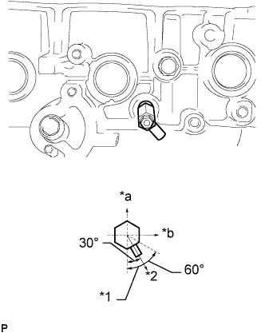 |
Установите на блок цилиндров кран для слива охлаждающей жидкости, как показано на рисунке.
| *1 | Допустимый диапазон |
| *2 | Заданное направление |
| *a | Верхняя сторона |
| *b | Передняя сторона |
Установите пробку на кран для слива охлаждающей жидкости в сборе.
| 3. УСТАНОВИТЕ ШТУЦЕР ПОДАЧИ МАСЛА № 1 В СБОРЕ |
| 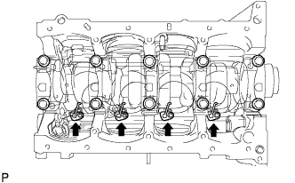 |
С помощью шестигранного гаечного ключа на 5 мм установите штуцеры подачи масла.
| 4. УСТАНОВИТЕ ВЕДОМУЮ ШЕСТЕРНЮ УРАВНОВЕШИВАЮЩЕГО ВАЛА № 2 |
Зажмите головку уравновешивающего вала в тисках.
| 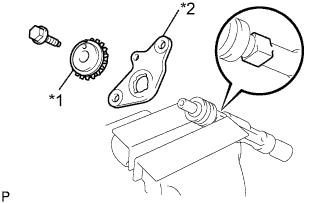 |
Установите упорную шайбу уравновешивающего вала № 2 и ведомую шестерню уравновешивающего вала № 2.
| *1 | Ведомая шестерня уравновешивающего вала № 2 |
| *2 | Упорная шайба уравновешивающего вала № 2 |
Вверните болт.
| 5. УСТАНОВИТЕ УРАВНОВЕШИВАЮЩИЙ ВАЛ № 2 |
| 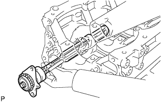 |
Установите уравновешивающий вал в блок цилиндров.
| 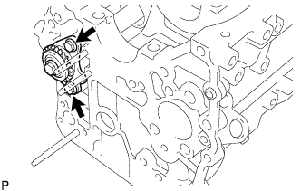 |
Заверните 2 болта.
| 6. УСТАНОВИТЕ ВЕДОМУЮ ШЕСТЕРНЮ УРАВНОВЕШИВАЮЩЕГО ВАЛА № 1 |
Зажмите головку уравновешивающего вала в тисках.
| 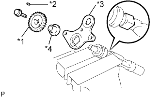 |
Установите упорную шайбу уравновешивающего вала № 1, распорную втулку уравновешивающего вала, сдвижную шпонку и ведомую шестерню уравновешивающего вала № 1.
| *1 | Ведомая шестерня уравновешивающего вала № 1 |
| *2 | Сдвижная шпонка |
| *3 | Упорная шайба уравновешивающего вала |
| *4 | Распорная втулка уравновешивающего вала |
Заверните болт.
| 7. УСТАНОВИТЕ УРАВНОВЕШИВАЮЩИЙ ВАЛ № 1 |
| 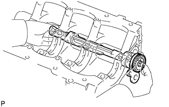 |
Установите уравновешивающий вал № 1 в блок цилиндров.
| 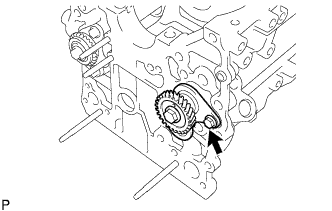 |
Вверните болт.
| 8. УСТАНОВИТЕ ПОРШЕНЬ С ПАЛЬЦЕМ В СБОРЕ |
Соберите поршень и шатун.
| 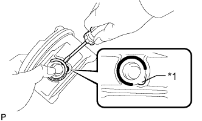 |
С помощью отвертки установите новое пружинное стопорное кольцо с одного из концов отверстия под поршневой палец.
| *1 | Технологическое отверстие |
Постепенно нагрейте поршень до температуры примерно 80-90°C (176-194°F).
Покройте поршневой палец моторным маслом.
 |
Совместите передние метки на поршне и шатуне, после чего надавите на поршневой палец большим пальцем.
| *1 | Метка передней стороны |
| 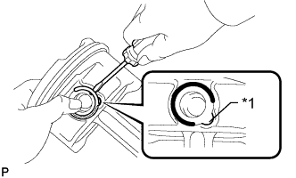 |
С помощью отвертки установите новое стопорное кольцо с другой стороны отверстия под поршневой палец.
| *1 | Технологическое отверстие |
Проверьте условия посадки поршня на поршневой палец, попробовав подвигать поршень по пальцу взад-вперед.
| 9. УСТАНОВИТЕ НАБОР ПОРШНЕВЫХ КОЛЕЦ |
Установите рукой расширитель маслосъемного кольца.
| 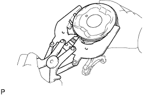 |
С помощью съемника поршневых колец установите направляющую маслосъемного кольца.
| 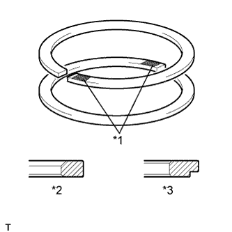 |
С помощью съемника поршневых колец установите 2 компрессионных кольца так, чтобы нанесенные краской метки располагались, как показано на рисунке.
| *1 | Метка с кодом |
| *2 | Компрессионное кольцо № 1 |
| *3 | Компрессионное кольцо № 2 |
| 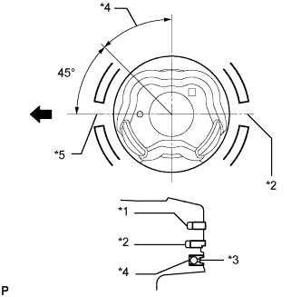 |
Расположите поршневые кольца таким образом, чтобы концы колец располагались, как показано на рисунке.
| *1 | Компрессионное кольцо № 1 |
| *2 | Компрессионное кольцо № 2 |
| *3 | Маслосъемное кольцо |
| *4 | Съемник маслосъемных колец |
| *5 | Маслосъемное кольцо и компрессионное кольцо № 1 |
 | Передние противотуманные фары |
| 10. УСТАНОВИТЕ ПОДШИПНИК КОЛЕНЧАТОГО ВАЛА |
Очистите коренную шейку и обе поверхности подшипника.
Установите верхний подшипник.
| 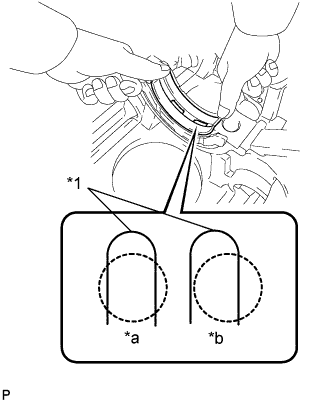 |
Установите верхний подшипник на блок цилиндров, как показано на рисунке.
| Наименование | Заданные условия |
| Шейки № 1, 5 | 3,75 мм (0,148 дюйма) |
| Шейка № 3 | 1,74 мм (0,0684 дюйма) |
| Шейки № 2, 4 | 2,75 мм (0,108 дюйма) |
| *1 | Смазочная канавка |
| *a | ПРАВИЛЬНО |
| *b | НЕПРАВИЛЬНО |
| 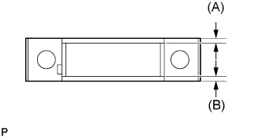 |
Установите нижний подшипник.
Установите нижний подшипник в крышку подшипника.
С помощью штангенциркуля измерьте расстояние между кромкой крышки подшипника и кромкой нижнего подшипника.
| Наименование | Заданные условия |
| Шейки № 1, 5 | 3,75 мм (0,148 дюйма) |
| Шейка № 3 | 1,75 мм (0,0689 дюйма) |
| Шейки № 2, 4 | 2,75 мм (0,108 дюйма) |
Установив верхний и нижний подшипники, установите крышки подшипников на блок цилиндров с помощью молотка с пластмассовым покрытием.
| 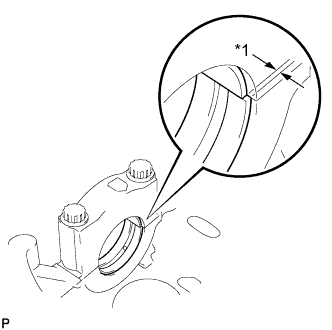 |
С помощью штангенциркуля измерьте рассогласование между верхним и нижним подшипниками, как показано на рисунке.
| *1 | Отклонение |
Снимите крышку подшипника.
Нанесите моторное масло на упорные шайбы.
| 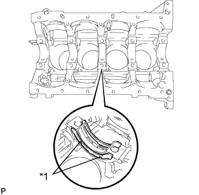 |
Установите 2 упорные шайбы по месту шейки № 3 в блоке цилиндров так, чтобы смазочные канавки были направлены наружу.
| *1 | Смазочная канавка |
| 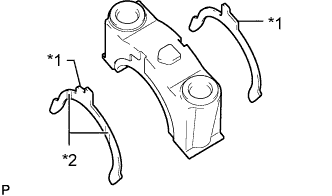 |
Установите 2 упорных шайбы на крышку подшипника № 3 так, чтобы канавки были направлены наружу.
| *1 | Захват |
| *2 | Смазочная канавка |
Нанесите моторное масло на нижний подшипник.
| 11. УСТАНОВИТЕ КОЛЕНЧАТЫЙ ВАЛ |
Нанесите моторное масло на верхний подшипник и установите коленчатый вал в блок цилиндров.
| 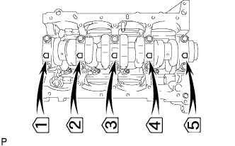 |
Установите на место 5 крышек подшипников коленчатого вала.
Вверните болт крышки подшипника коленчатого вала.
Нанесите тонкий слой моторного масла на резьбы и под головки болтов крышек подшипников.
Временно вверните болты крышек подшипников коленчатого вала.
| 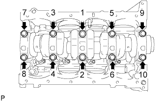 |
Шаг 1:
Равномерно затяните 10 болтов крышек коренных подшипников в последовательности, показанной на рисунке.
Отметьте внешнюю сторону болтов крышек подшипников краской.
Шаг 2:
Затяните болты крышек подшипников, поворачивая их на 90° в той же последовательности, что и на шаге 1.
Убедитесь, что метки развернуты на 90° относительно исходного положения.
Проверьте, чтобы коленчатый вал вращался плавно.
Проверьте осевой зазор коленчатого вала (Нажмите здесь).
| 12. УСТАНОВИТЕ ПОДШИПНИК ШАТУНА |
| 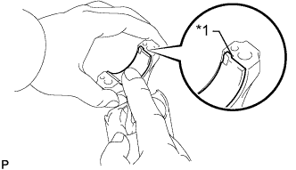 |
Совместите выступ подшипника с канавкой шатуна или крышки шатуна.
| *1 | Захват |
Установите подшипники на шатун и в крышку шатуна.
| 13. УСТАНОВИТЕ ПОРШЕНЬ С ШАТУНОМ В СБОРЕ |
Нанесите моторное масло на стенки цилиндра, поршни и поверхности подшипников шатуна.
Расположите поршневые кольца таким образом, чтобы концы колец располагались, как показано на рисунке.
| *1 | Компрессионное кольцо № 1 |
| *2 | Компрессионное кольцо № 2 |
| *3 | Маслосъемное кольцо |
| *4 | Съемник маслосъемных колец |
| *5 | Маслосъемное кольцо и компрессионное кольцо № 1 |
| Передние противотуманные фары |
| 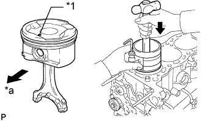 |
С помощью съемника поршневых колец вставьте в каждый из цилиндров узлы поршней и шатунов с соответствующими номерами таким образом, чтобы передняя метка на поршне была повернута вперед.
| *1 | Метка передней стороны |
| *a | Передняя сторона |
Проверяйте соответствие номеров крышек шатунов и шатунов.
| 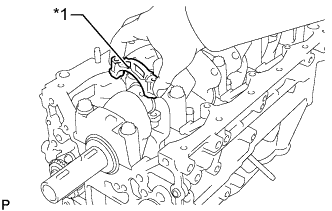 |
Убедитесь, что метка внешней стороны на крышке шатуна обращена вперед.
| *1 | Метка передней стороны |
Установите крышку шатуна и закрепите ее болтами.
Нанесите тонкий слой моторного масла на резьбу и под головки болтов крышек шатуна.
| 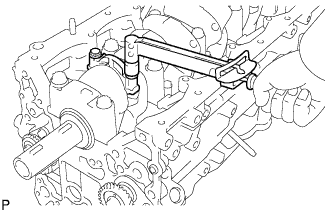 |
Шаг 1:
Установите и поочередно в несколько этапов затяните болты крышки шатуна.
Пометьте краской переднюю сторону каждого болта крышки шатуна.
Шаг 2:
Затяните болты крышки на 90°, как показано на рисунке.
Убедитесь, что нанесенные краской метки развернуты на 90° относительно исходного положения.
Убедитесь, что коленчатый вал вращается плавно.
Проверьте осевой зазор шатуна (Нажмите здесь).